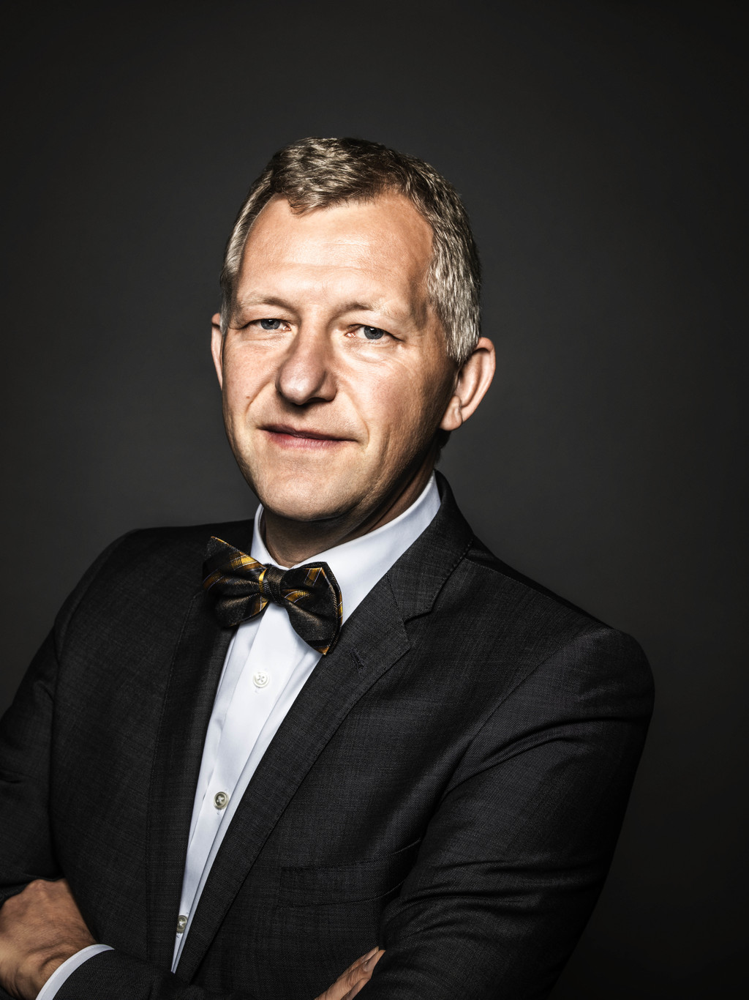

Полное название компании Porsche звучит как Dr. Ing. h.c. F. Porsche AG, что также можно разложить на Doktor Ingenieur honois causa Ferdinand Porshe Aktiengesellshaft. Эту инжениринговую компанию основал легендарный немецкий конструктор, доктор инженерных наук Фердинанд Порше в 1931 году. Штаб-квартира компании Porsche и ее основная мануфактура находятся в немецком городе Штутгарт. Основным держателем акций этой компании по сегодняшний день остается семейство Порше.Компанія випускає спортивні автомобілі декількох класів — спортивні родстери (Porsche Boxster, Porsche Cayman), спортивні купе (Porsche 911), SUV великого класу (Porsche Cayenne) та середнього класу Porsche Macan; супер-спортивні моделі Porsche Carrera GT та Porsche 918. З 2009 року компанія додала до свого модельного ряду також 4-дверний спортивний лімузин (за американською класифікацією «седан») Porsche Panamera.
 |

|
Контакт-центр Porsche в Україні: 0 (800) 500-991 Години роботи: з 08:00 до 20:00, щоденно.